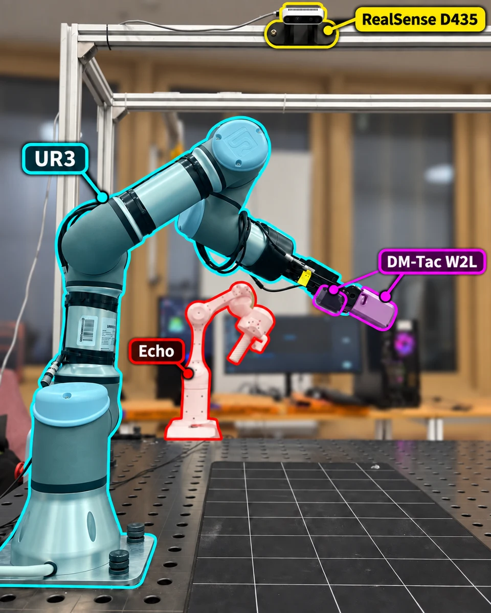
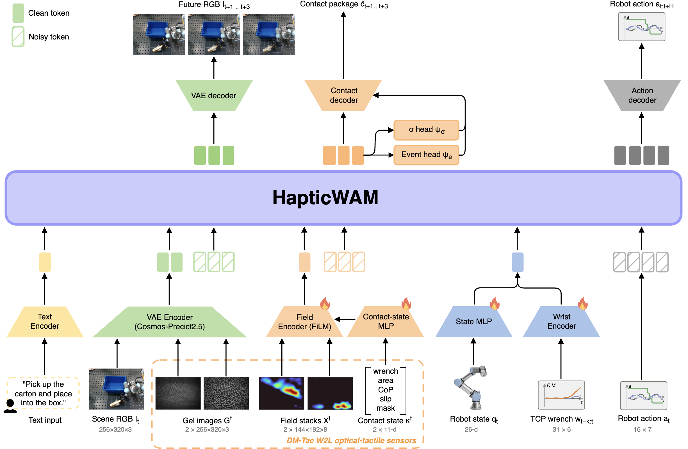
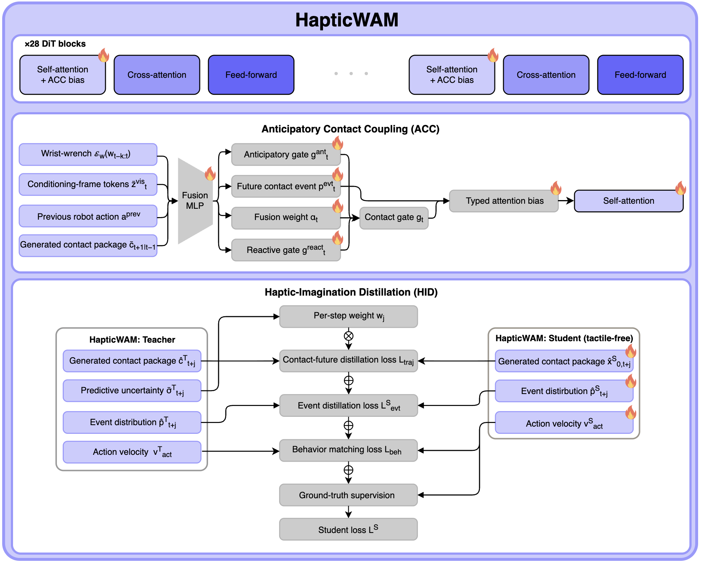

HapticWAMDistilling imagined touch
into a world–action model
Learning to predict contact, then transferring that knowledge to a policy without fingertip observations.
Intelligent Space Robotics Laboratory · Skoltech * Equal contribution
Contact is more than appearance.
A scene image can show a gripper surrounding an object without resolving whether the grasp is stable, slipping, or applying excessive force. Optical tactile sensors expose local deformation and contact mechanics, but directly conditioning a policy on these measurements ties its inputs to the fingertips.
We introduce HapticWAM, a world–action model that jointly generates actions and a structured description of future contact. A tactile-conditioned teacher learns from gel images, mechanical fields, and contact state. Haptic-Imagination Distillation transfers its contact futures and action predictions to a student that retains contact generation while removing the fingertip input branches.
The central question is whether contact can remain a useful internal representation when it is no longer directly observed by the policy.

Predicting touch alongside action.
A frozen Cosmos-Predict2.5-2B video backbone processes observation, video, contact, and action groups in one latent sequence. LoRA adapters and newly introduced modules learn the manipulation task. At each replan, the model jointly denoises future video, a contact package, and an action chunk.
The contact package represents events and mechanics: no contact, onset, hold, slip, or release; changes in displacement and normal-force fields; contact masks, centers of pressure, slip scores, and wrenches. It does not merely reconstruct the appearance of a tactile image.

From sensor streams to latent frames
Appearance. The frozen VAE encodes the scene image and the two gel images. A learned pointwise convolution fuses the fingertip appearance into one observation frame. Scene RGB remains available to both teacher and student.
Mechanics. Each fingertip contributes eight field channels: two deformation components, depth, two shear components, and three distributed-force components. The 11-dimensional contact state contains the resultant wrench, contact area, center of pressure, slip, and mask fraction. A contact-state MLP produces FiLM modulation for the convolutional field encoder.
Robot context. A state MLP encodes the 26-dimensional robot state, and a causal temporal convolution encodes the arm-side wrench history. This wrench is estimated from motor currents. Task text and the previous action chunk provide additional conditioning.
Joint generation and readout
Observation frames remain fixed while video, contact, and action groups are jointly denoised using rectified flow. The VAE decodes video futures; the contact decoder unpacks spatial fields and mechanical quantities; and the action decoder returns end-effector pose deltas and absolute gripper apertures. Separate event and uncertainty heads read the contact hidden states.
The contact codec packs field changes and masks onto a latent grid, event labels into one-hot bands, centers of pressure into Gaussian bumps, slip into tiled values, and wrenches into spatial blocks. The event and mechanical channels are generated together. A structural attention mask blocks contact/action queries from directly attending to generated-video keys, although indirect coupling remains possible.
Compare teacher and student inputs
Frozen video backbone
Cosmos-Predict2.5-2B
+ LoRA + learned modules
A compact view of the input difference. The detailed framework above and internals below specify the full architecture.
Inside the backbone: attention and distillation
The backbone contains 28 diffusion-transformer blocks, each with self-attention, cross-attention to the task-text embedding, and a feed-forward MLP. ACC modifies self-attention scores on haptic keys. HID supplies the training signals that transfer contact generation and action behavior from the frozen teacher to the student.

Anticipatory Contact Coupling
ACC combines current observations with contact imagined at the previous replan, using this summary to bias attention on haptic keys. The teacher also has a reactive branch driven by observed tactile change. The student uses the anticipatory branch alone. At deployment, the prior contact package is generated by the model, rather than supplied by future measurements.
The fusion MLP combines the encoded wrench history, pooled conditioning-frame features, the previous action chunk, and the aligned previous contact prediction. It outputs an anticipatory gate, a future-event distribution, and a blending coefficient. The teacher mixes anticipatory and reactive gates; the student uses the anticipatory gate directly.
gt = αt gtant + (1 − αt) gtreactgt = gtantEach transformer block adds a learned, event-typed bias multiplied by this gate to pre-softmax scores on haptic keys. Block scales start at zero. This internal attention modulation is distinct from the scripted contact-probability veto used by the deployment controller.
Transferring contact knowledge
Haptic-Imagination Distillation matches the teacher’s contact futures, event distributions, and action velocities. Event saliency and predicted uncertainty weight contact-future matching. The student inherits teacher weights and is distilled on demonstrations and mixed policy rollouts, including unsuccessful rollouts with no ground-truth action weight.
Contact futures · Ltraj
Match the packed student contact prediction to the frozen teacher’s generated package. Per-step weights increase with predicted contact-event saliency and decrease with teacher-predicted uncertainty; this is not assumed to be calibrated confidence.
Events · LevtS
Match teacher and student event distributions using KL divergence. This loss does not receive the contact-future weighting.
Behavior · Lbeh
Match action-flow velocities at the same noisy action chunk and noise level. Contact and behavior targets come from the frozen teacher.
Additional supervision
Retain reduced-weight ground-truth action, video, and arm-wrench losses, ACC auxiliaries, and an uncertainty readout trained on detached hidden states. Failed rollouts have zero ground-truth action weight while teacher matching remains active.
Training configuration and physical horizons
The teacher has 27.9 M trainable parameters and receives 20,000 demonstration updates followed by 2,000 simulation/rollout updates. The deployed student receives 1,000 distillation updates. Removing its fused gel and mechanics observation frames reduces the latent sequence from 14 to 12 frames; the student has 26.4 M trainable parameters.
Each training clip contains one current RGB frame and 12 future targets at 4 Hz. Contact targets are at 1, 2, and 3 seconds; action targets are at 0.1–1.6 seconds at 10 Hz. Future targets are not observed history.
Full equations and loss weights in the manuscript ↗A contact future, made visible.
Inspect a fixed prediction from an archived offline teacher rerun. Choose an episode, fingertip, and prediction horizon to compare a generated contact field with its recorded target. The camera frames provide physical context for the same anchor and future times.
These examples reveal the representation and its errors. They are not a held-out accuracy benchmark or recordings of the student’s online predictions.
Mask value · shared color scale
Three tasks. Two hundred trials.
We evaluate the deployed teacher, distilled student, π0.5, and Diffusion Policy on waffle, carton, and egg pick-and-place. Each model is tested on 20 waffle, 20 carton, and 10 egg starts. Starting positions are shared across models; success is an operator-reviewed placement at the target.
The student achieves the highest observed placement rate on each task: 19/20 on waffles, 17/20 on cartons, and 5/10 on eggs. Across tasks, this is 41/50 placements (82% pooled), or 76.7% when each task is weighted equally.
Exact counts and downloadable results
| Model | Waffles | Carton | Egg | Pooled |
|---|---|---|---|---|
| Teacher | 14/20 | 12/20 | 4/10 | 30/50 |
| Student | 19/20 | 17/20 | 5/10 | 41/50 |
| π0.5 | 4/20 | 6/20 | 0/10 | 10/50 |
| Diffusion Policy | 2/20 | 3/20 | 4/10 | 9/50 |
These are comparisons of complete deployed configurations. Training data, candidate selection, gripper timing, and replan limits differ. The student–teacher gap is not separable at this sample size, and the comparison does not isolate a distillation effect. Egg handling remains difficult: its 5/10 student result has a wide 23.7–76.3% Wilson interval.
Evaluation protocol and baseline configuration
Starts use seeds 101–120 for waffles and cartons and 101–110 for eggs. Model order alternates between launches. The operator is not blinded; the reported teacher–student pair was selected after its carton result was observed.
The baseline export contains 876 episodes and excludes deliberate failures; baselines receive no simulation episodes or policy rollouts. Diffusion Policy’s deployment history is 0.486 s apart, compared with 0.1 s during training.
The teacher uses compiled kernels and the student does not. Median replan times are 0.445 s (teacher), 0.636 s (student), 0.127 s (π0.5), and 0.389 s (Diffusion Policy). These figures do not establish a student speed advantage.
What changes when imagined contact is clamped?
We keep the deployed student checkpoint fixed and replace the generated contact frames with zeros throughout sampling. Thirty additional robot trials are compared with the intact student’s previously recorded outcomes on the same first ten starts per task.
Successful placements fall from 21/30 to 4/30, a decrease of 56.7 percentage points. The largest task-level change occurs on waffles.
This supports deployment-time dependence on the contact-generation pathway in the evaluated system. It does not isolate ACC’s attention bias, establish contact-prediction accuracy, or compare contact distillation with action-only training. Intact trials precede intervention trials, so session-order effects remain possible.
Offline intervention results
On 124 held-out validation windows, zeroing generated contact raises the student’s endpoint error from 22.31 mm to 28.31 mm, the no-motion floor. Zeroing only the ACC input leaves it at 22.35 mm. These interventions act on different parts of the system.
Placement and force are different outcomes.
We report pinch force separately from placement. The student has lower mean force than the teacher on waffles and eggs, and a similar mean on cartons. These summaries are conditional on sensor-defined placements, whose counts can differ from operator verdicts.
The 24.8 N reference used for waffle/carton analysis is derived from those observations; it is not a calibrated safety limit for eggs. Two egg cracks were recorded for Diffusion Policy and none for the other models. Conditional force summaries and limited event coverage do not establish damage-free control.
What the evidence establishes.
HapticWAM provides a way to transfer structured contact generation into a policy that does not consume fingertip observations. The evaluated student has the highest observed placement counts, and clamping its contact generation changes closed-loop outcomes substantially.
The experiments are exploratory, use single training runs, and cover three tasks on one platform. They do not establish calibrated contact forecasting, an isolated benefit of ACC, or superiority to a matched action-only distillation control. The shared tactile-assisted controller remains part of the reported system.
Matched training controls, held-out contact-prediction evaluation, and interventions separated from execution rules are important next steps.
Paper, data, and models.
The report follows the manuscript revision supplied on 20 September 2026. Demonstrations and contact arrays are derived from pinned public Hugging Face archives; their provenance is recorded alongside the assets.
Citation
@misc{sannikov2026hapticwam,
title = {HapticWAM: Distilling Imagined Touch into a
World--Action Model without Inference-Time Tactile Sensing},
author = {Sannikov, Mikhail and Mikhalchuk, Ilya and
Gubernatorov, Konstantin and Kovalev, Petr and
Oluwatobi, Ogunwoye Faith and Tsetserukou, Dzmitry},
year = {2026},
note = {Manuscript}
}